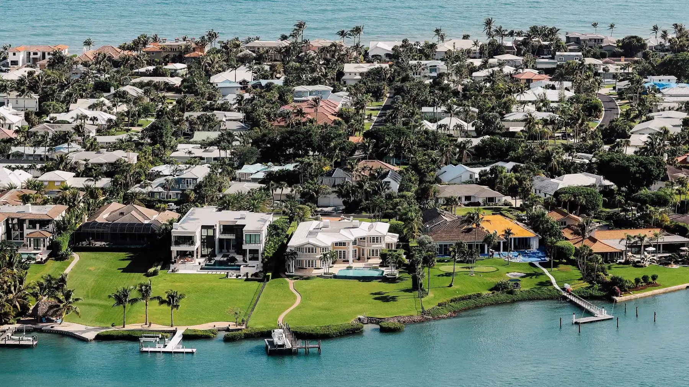

West Bradenton
Bayshore Gardens
Manatee County, Florida
Bayshore Gardens sits south of Bradenton along US 41, running down toward the Sarasota county line. It was developed largely in the 1950s and 1960s as one of the county original planned subdivisions, and it retains its own recreation district.
It is among the more affordable parts of coastal Manatee County, and it sits close to Sarasota Bay with marina access through the Bayshore Gardens Park and Recreation District.
- To the Beach
- About 20 minutes
- Typical Range
- [[FILL IN: pull from Stellar MLS]]
- What Was Built Here
- Mid century ranch, block homes, condominiums, mobile home parks
The Details
What defines Bayshore Gardens.
- A dedicated park and recreation district with a marina and pool
- Direct frontage on Sarasota Bay at the district park
- Some of the lower price points in coastal Manatee County
- US 41 corridor access north to Bradenton and south to Sarasota
- A mix of single family, condominium, and manufactured housing
Questions
What people ask me about Bayshore Gardens.
What is the recreation district?
Bayshore Gardens has its own park and recreation district funded by a separate assessment on properties within it. It maintains the bayfront park, a marina with boat slips, a pool, and ball fields. It is a real line item on the tax bill and also a real amenity, so it belongs in any cost comparison against a neighborhood without one.
Is the marina available to residents?
The district marina offers slips to property owners within the district, generally with a waiting list. Availability, cost, and the current rules change, so it is worth confirming directly with the district if dockage is part of why you are looking here.
How is the commute to Sarasota from here?
Bayshore Gardens sits close to the county line, which makes it one of the shorter drives in Manatee County to downtown Sarasota and to Sarasota Bradenton International Airport. US 41 and I-75 are both accessible, with 41 slower and more direct.
Nearby